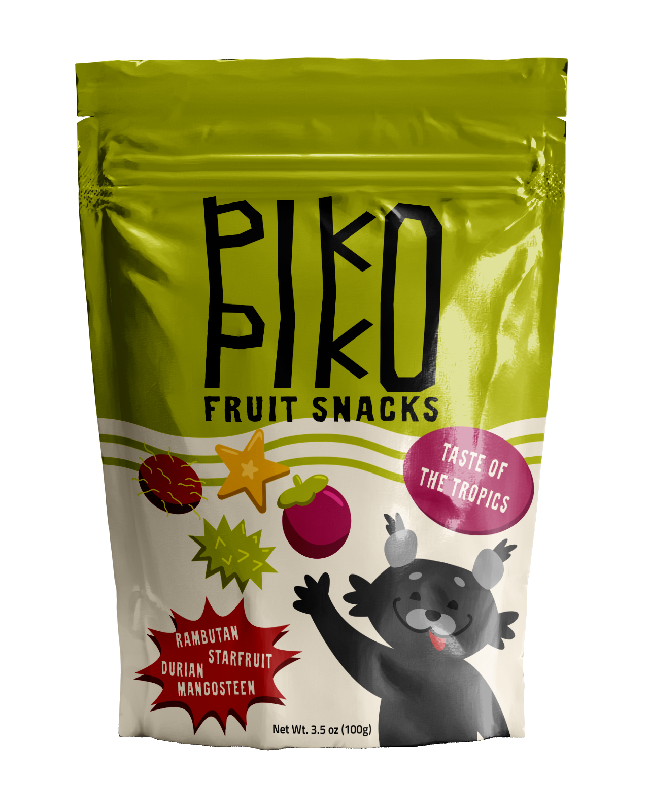
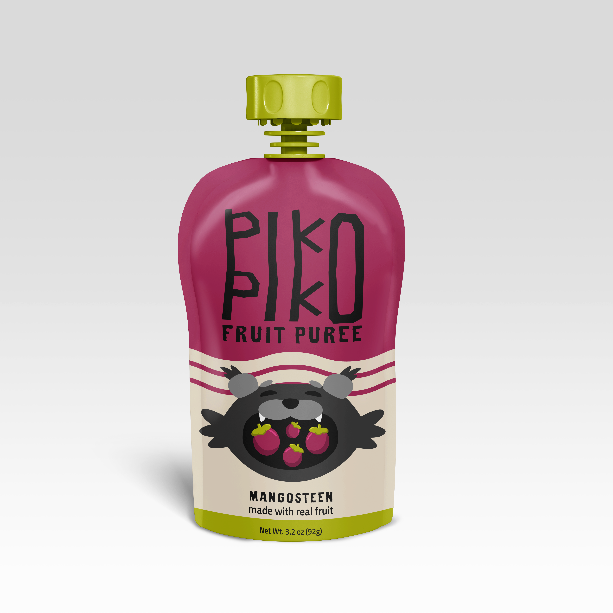
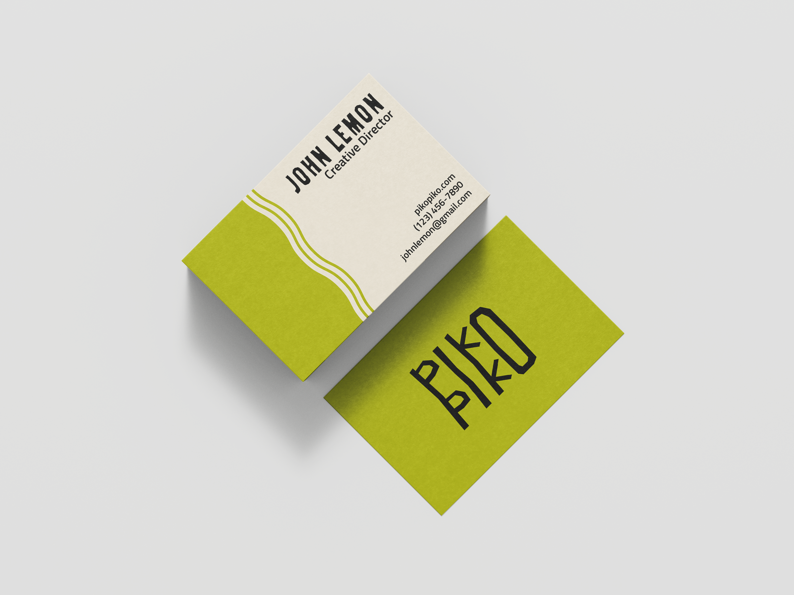
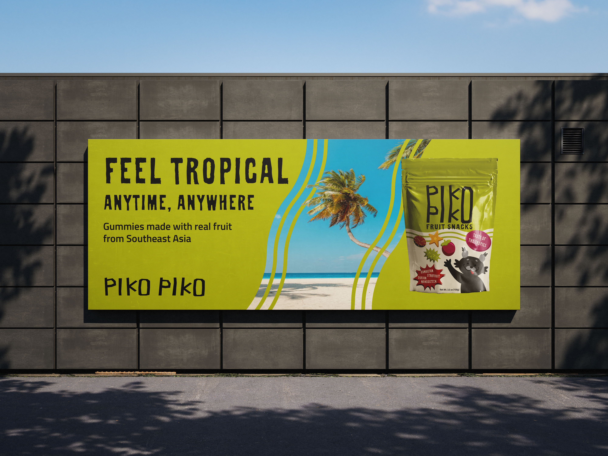
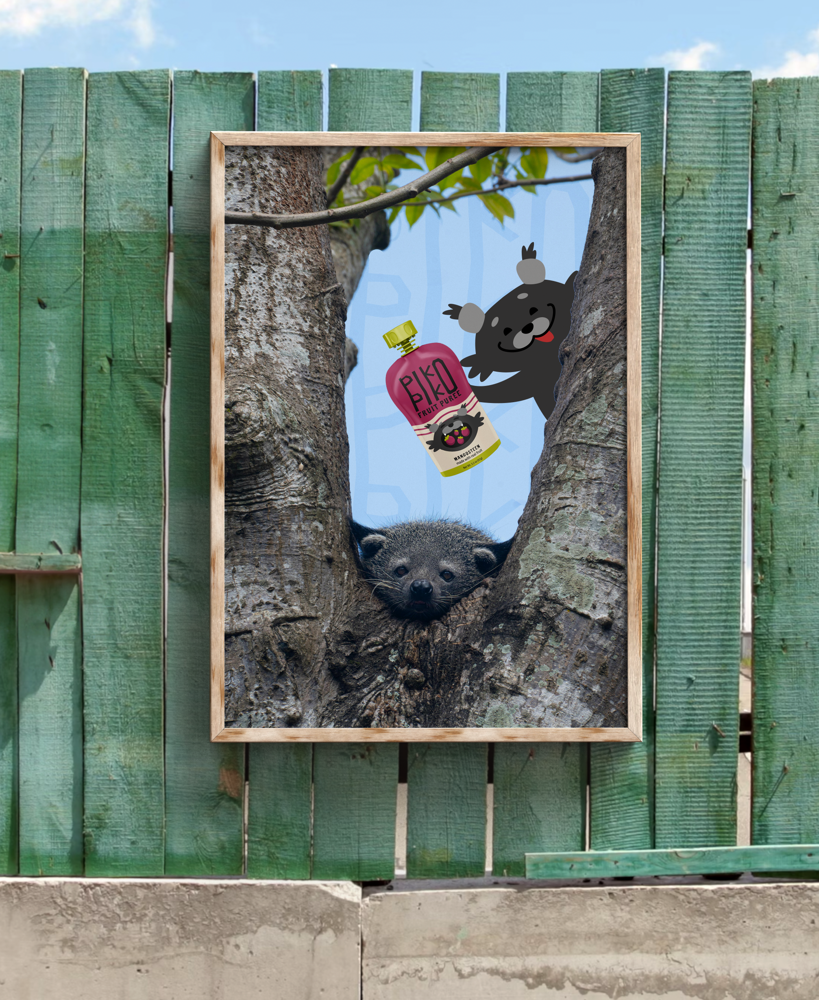
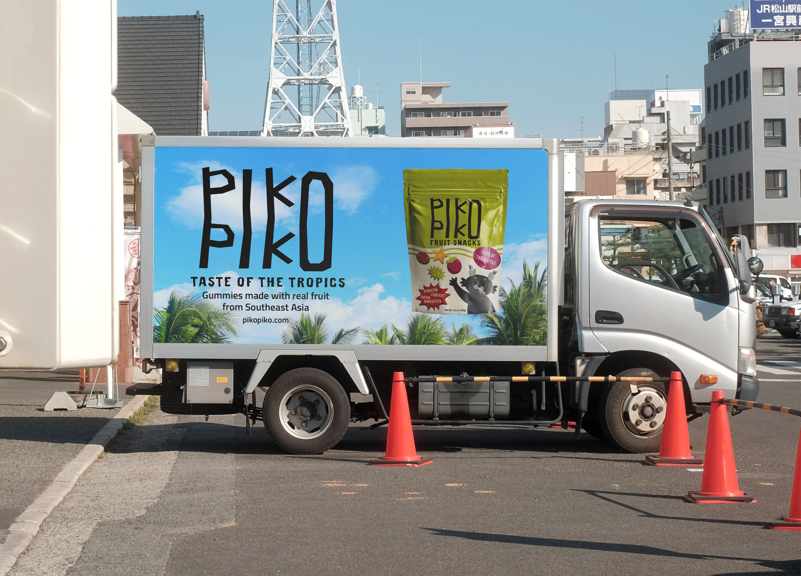

Piko Piko is a fruit product based brand that focuses exclusively on Southeast Asian fruits. As someone who loves fruit gummies, but only sees the same banana-strawberry-apple flavor profile, I was inspired to make my own brand that focuses on the fruits I grew up eating. The flagship product of Piko Piko are gummies, but the brand expands beyond just that.





